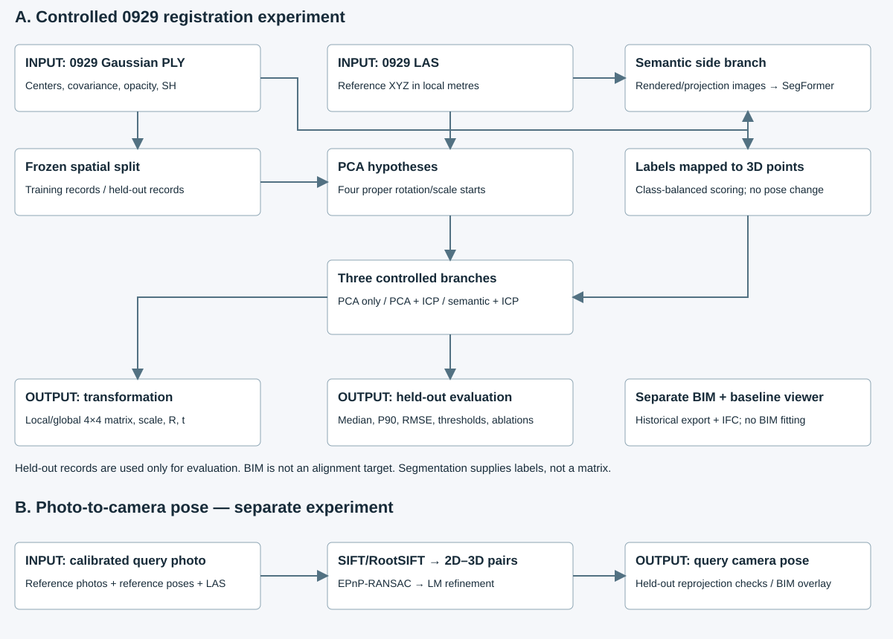
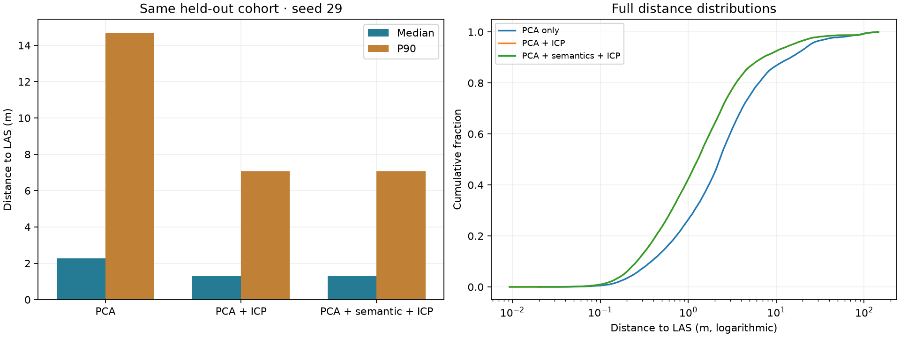
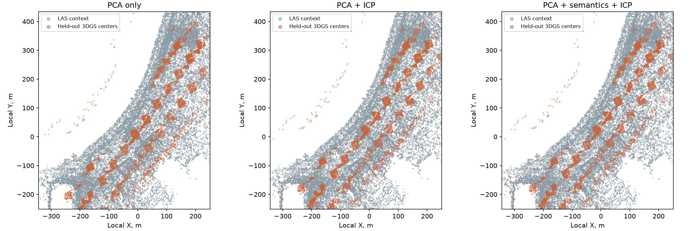
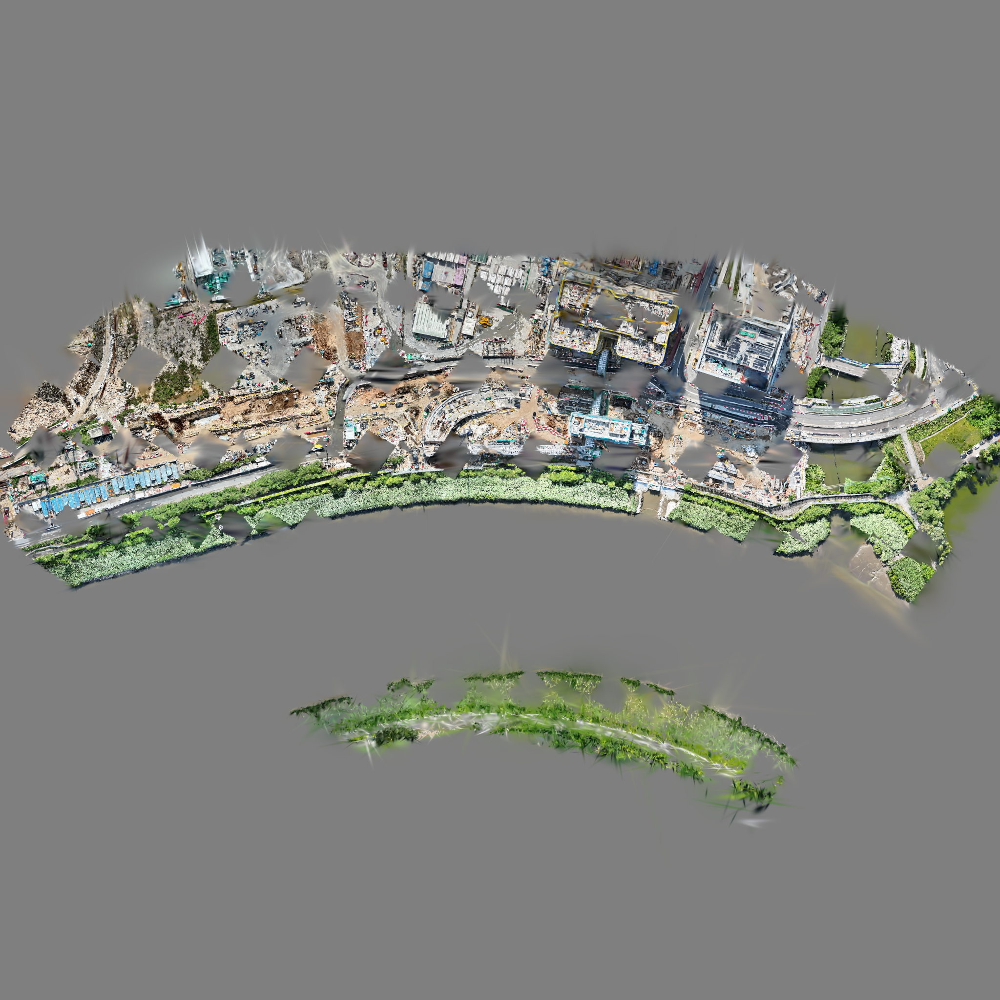
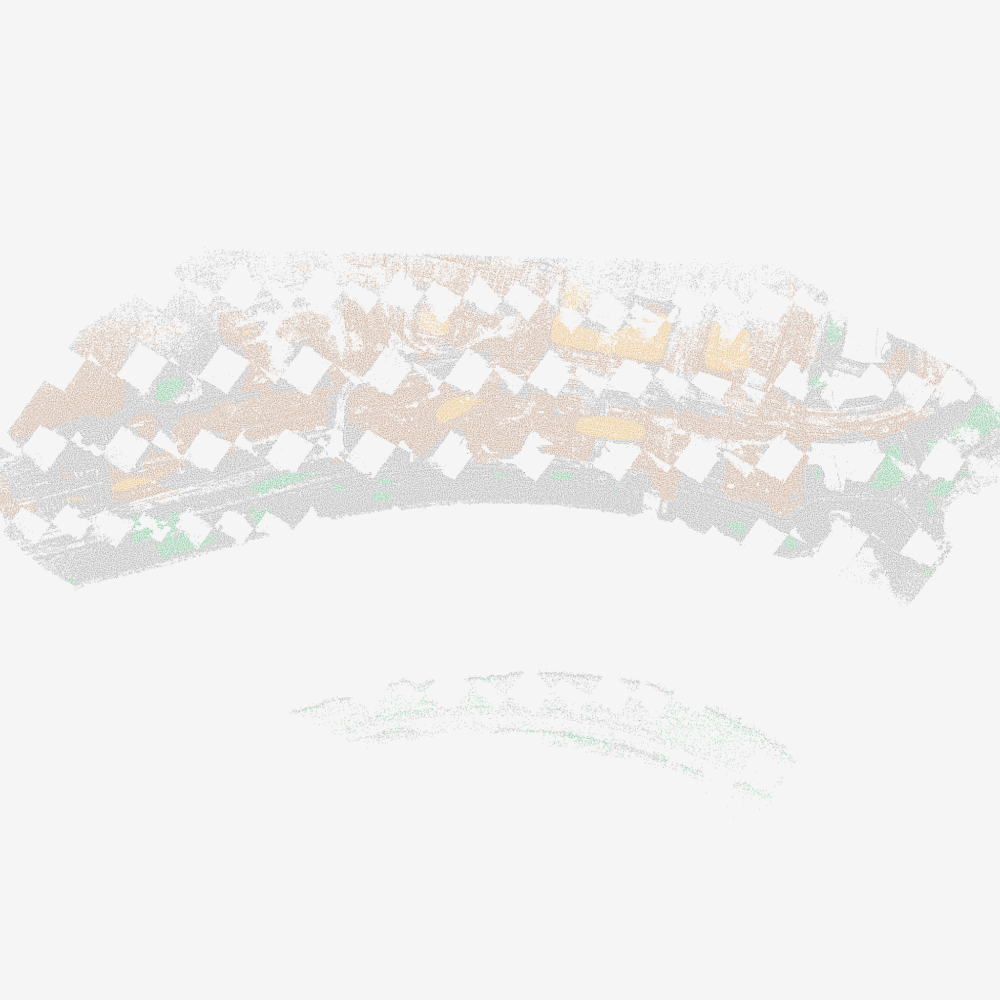
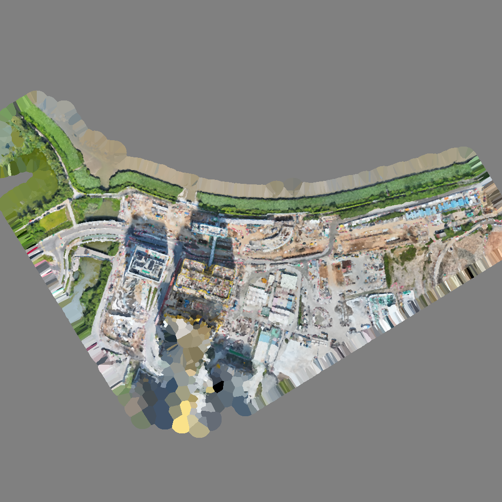
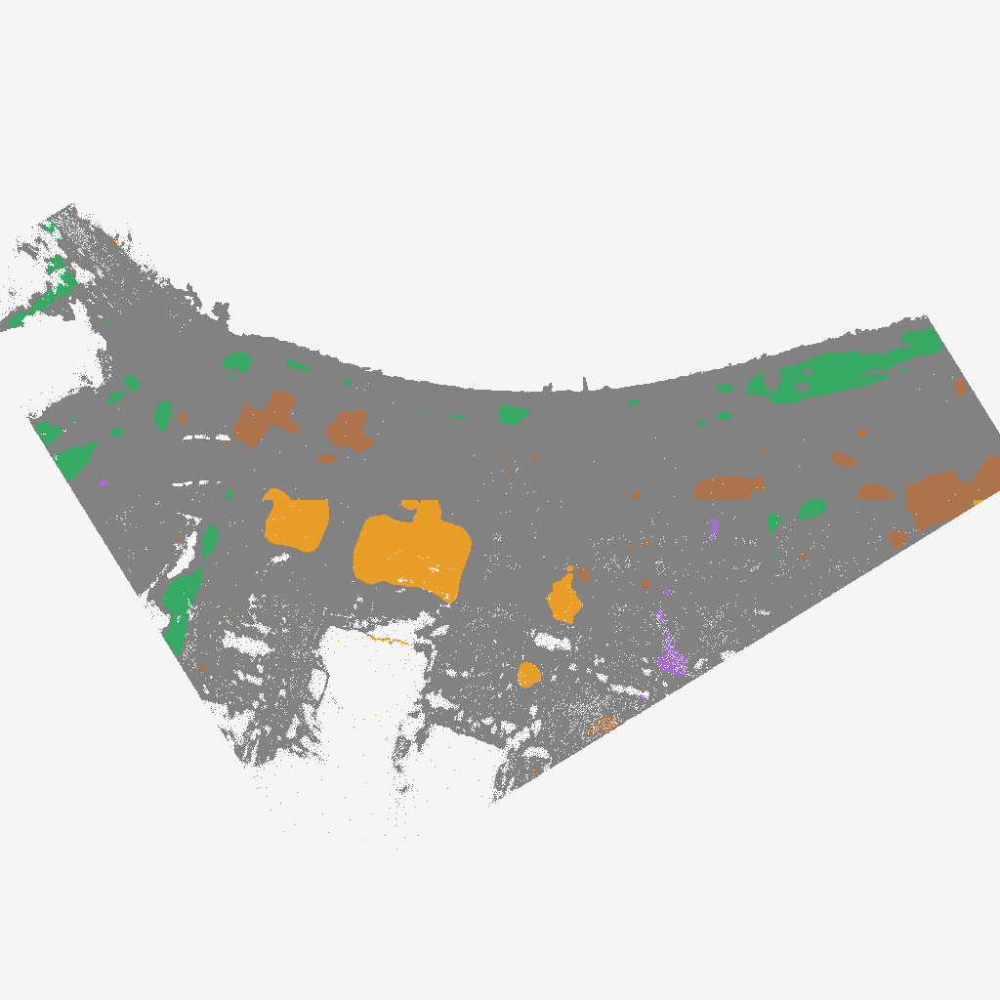

A controlled comparison of PCA only, PCA + ICP, and PCA + semantic ranking + ICP.
Frozen protocol · Every run (CSV) · Matrices, stages and candidate traces (JSON) · Pipeline diagram · Photo-to-camera report

The same 48,081 finite, positive-opacity Gaussian centers are evaluated in every run. Source records are sampled every tenth record; tiles use source coordinates and a width of 0.4 source units. Tiles whose integer-coordinate sum is divisible by four are withheld. The 152,324 fitting records are disjoint from these records. Quantile cropping applies only to fitting, not evaluation.
PCA supplies exactly four proper sign hypotheses. The primary branches refine one ranked hypothesis each. The four-start ablations increase the budget for both geometric and semantic methods. No RTK, camera pose, manual seed, previously fitted transformation or historical correspondence bank enters these fits. Final candidate selection uses training scores only. All held-out distances use the entire same-date LAS reference; no candidate-dependent overlap mask or error trimming is applied during evaluation.
Geometric ranking uses the 75th percentile of training distances. Semantic ranking adds 0.5 times the equal-weight mean of per-class 60th-percentile distances, capped at 20 m. Classes are structures, paved surfaces, ground and vegetation; at least two shared classes with 128 points each are required. Unknown, water and movable classes do not contribute. ICP itself remains geometric.
Historical context: these data and semantic/render settings have been explored before. Cached source label centers exclude held-out tiles, but Gaussian footprints can cross tile boundaries. This is a controlled development ablation, not a newly blinded test. The previous viewer export uses a separate RTK/COLMAP-assisted baseline and remains unchanged. Its old overlap-filtered metrics must not be compared directly with this full-cohort experiment.
Across three sampling seeds, mean held-out median changes from 2.278 m after PCA to 1.350 m after ICP. Adding semantic ranking changes that value by +0.000000 m. The geometric and semantic primary branches selected identical final matrices on all three seeds: no additional pose-accuracy benefit is observed here.
| Method | Evaluated runs | Median: mean [min, max], m | Mean P90, m | Mean within 1 m | Selected PCA IDs, seeds 17/29/43 |
|---|---|---|---|---|---|
| PCA only | 3 / 3 | 2.278 [2.278, 2.278] | 14.703 | 26.4% | 0, 0, 0 |
| PCA + ICP | 3 / 3 | 1.350 [1.286, 1.408] | 8.140 | 41.5% | 0, 0, 0 |
| PCA + semantics + ICP | 3 / 3 | 1.350 [1.286, 1.408] | 8.140 | 41.5% | 0, 0, 0 |


Values below use seed 29 and each branch’s selected starting hypothesis. Segmentation changes labels, not coordinates: the matrix and geometric distances immediately before and after label assignment are identical. Semantic scoring can select a different PCA hypothesis; its effect is tested by comparing branches. Point-to-point and point-to-plane ICP checkpoints are saved separately.
| Branch | Checkpoint | Median, m | P90, m | RMSE, m | Within 1 m |
|---|---|---|---|---|---|
| PCA only | pca | 2.278 | 14.703 | 15.321 | 26.4% |
| PCA only | after_semantic_labels | 2.278 | 14.703 | 15.321 | 26.4% |
| PCA only | point_to_point_icp | 2.278 | 14.703 | 15.321 | 26.4% |
| PCA only | final | 2.278 | 14.703 | 15.321 | 26.4% |
| PCA + ICP | pca | 2.278 | 14.703 | 15.321 | 26.4% |
| PCA + ICP | after_semantic_labels | 2.278 | 14.703 | 15.321 | 26.4% |
| PCA + ICP | point_to_point_icp | 1.513 | 10.742 | 14.108 | 38.4% |
| PCA + ICP | final | 1.286 | 7.071 | 13.353 | 42.3% |
| PCA + semantics + ICP | pca | 2.278 | 14.703 | 15.321 | 26.4% |
| PCA + semantics + ICP | after_semantic_labels | 2.278 | 14.703 | 15.321 | 26.4% |
| PCA + semantics + ICP | point_to_point_icp | 1.513 | 10.742 | 14.108 | 38.4% |
| PCA + semantics + ICP | final | 1.286 | 7.071 | 13.353 | 42.3% |
The frozen labels combine a drone SegFormer model and a LoveDA building specialist. These images show RGB inputs and predicted labels. The independent semantic-cache reproduction check confirms that every regenerated array matches the frozen inputs exactly. There is no independently annotated semantic ground truth, so we do not report segmentation accuracy, IoU or precision/recall. Confidence sweeps filter existing fused labels; they cannot recover classes previously marked unknown.




All settings were listed in the frozen protocol before this run. Relative to the semantic primary branch, one factor changes at a time: semantic weight (0.25/0.5/1), minimum confidence (0.6/0.7/0.8), retained fitting-distance quantile (0.6/0.75/0.9), or fine target voxel size (0.3/0.6/1.2 m). Four-start geometry and semantic controls test budget effects. Shuffled source labels are a negative control; their class identities are permuted while geometry stays fixed. They do not remove every statistical property of the labels.
| Setting | Evaluated runs | Median: mean [min, max], m | Mean P90, m | Mean within 1 m | Selected PCA IDs |
|---|---|---|---|---|---|
| PCA only | 3 / 3 | 2.278 [2.278, 2.278] | 14.703 | 26.4% | 0, 0, 0 |
| PCA + ICP | 3 / 3 | 1.350 [1.286, 1.408] | 8.140 | 41.5% | 0, 0, 0 |
| PCA + semantics + ICP | 3 / 3 | 1.350 [1.286, 1.408] | 8.140 | 41.5% | 0, 0, 0 |
| geometry_starts_4 | 3 / 3 | 1.350 [1.286, 1.408] | 8.140 | 41.5% | 0, 0, 0 |
| semantic_starts_4 | 3 / 3 | 1.350 [1.286, 1.408] | 8.140 | 41.5% | 0, 0, 0 |
| semantic_weight_025 | 3 / 3 | 1.350 [1.286, 1.408] | 8.140 | 41.5% | 0, 0, 0 |
| semantic_weight_100 | 3 / 3 | 1.350 [1.286, 1.408] | 8.140 | 41.5% | 0, 0, 0 |
| confidence_070 | 3 / 3 | 1.350 [1.286, 1.408] | 8.140 | 41.5% | 0, 0, 0 |
| confidence_080 | 3 / 3 | 1.350 [1.286, 1.408] | 8.140 | 41.5% | 0, 0, 0 |
| trim_060 | 3 / 3 | 1.539 [1.522, 1.563] | 11.708 | 38.2% | 0, 0, 0 |
| trim_090 | 3 / 3 | 1.024 [0.992, 1.049] | 4.745 | 49.3% | 0, 0, 0 |
| fine_voxel_030 | 3 / 3 | 1.396 [1.344, 1.455] | 8.545 | 40.6% | 0, 0, 0 |
| fine_voxel_120 | 3 / 3 | 1.277 [1.263, 1.300] | 6.809 | 42.5% | 0, 0, 0 |
| shuffled_source_labels | 3 / 3 | 1.350 [1.286, 1.408] | 8.140 | 41.5% | 0, 0, 0 |
Three seeds measure sensitivity to subsampling, not independent experimental replication. Runtime in the raw records includes first-use normal-cache preparation and excludes historical neural inference; it is descriptive, not a fair end-to-end speed benchmark. Every rejected attempt and its reason remain in the per-run JSON.
For seed 29, occupied source-space blocks of width 1.6 units are resampled together in a paired bootstrap (1,000 replicates). The statistic is the equal-weight mean of block medians, not the pooled point median above. Negative differences favor the second method. These approximate conditional intervals describe this scene only; spatial dependence and previous development remain limitations. No multiple-comparison significance or universal superiority claim is made.
| Comparison (second minus first) | Blocks | Mean block-median change, m | Approx. 95% interval, m |
|---|---|---|---|
| pca_icp minus pca_only | 53 | -4.6714 | [-7.6251, -2.0733] |
| pca_semantic_icp minus pca_icp | 53 | +0.0000 | [+0.0000, +0.0000] |
Nearest-neighbor distances are directional and density-sensitive. They do not establish correct physical correspondences, absolute pose error, BIM construction tolerance, or repeatability on new data. Low nearest-neighbor error alone is not an acceptance certificate. Large errors and all evaluated records remain in the metrics.
Column-vector convention: p_local = T_local × [x, y, z, 1]ᵀ. The upper-left block is sR, not just rotation. Local-to-global adds [825800, 842100, 0] once. The saved global matrix already includes that offset. Scale and translation units are explicitly recorded; inverse transformation is inverse(T).
Local matrix · Global matrix · Complete run and decomposition
Local[[-22.785801099 -5.907837429 -61.418122142 11.732095727] [ 48.526103041 38.722192552 -21.727635166 30.783396736] [ 38.10912744 -52.839097864 -9.055669213 103.467127677] [ 0. 0. 0. 1. ]]Global
[[ -22.785801099 -5.907837429 -61.418122142 825811.732095727] [ 48.526103041 38.722192552 -21.727635166 842130.783396736] [ 38.10912744 -52.839097864 -9.055669213 103.467127677] [ 0. 0. 0. 1. ]]
Local matrix · Global matrix · Complete run and decomposition
Local[[-21.976014032 -4.724839176 -58.654032007 5.593126509] [ 47.038016171 36.208753285 -20.540593685 45.918411211] [ 35.355969944 -51.109361657 -9.129803341 98.749921771] [ 0. 0. 0. 1. ]]Global
[[ -21.976014032 -4.724839176 -58.654032007 825805.593126509] [ 47.038016171 36.208753285 -20.540593685 842145.918411211] [ 35.355969944 -51.109361657 -9.129803341 98.749921771] [ 0. 0. 0. 1. ]]
Local matrix · Global matrix · Complete run and decomposition
Local[[-21.976014032 -4.724839176 -58.654032007 5.593126509] [ 47.038016171 36.208753285 -20.540593685 45.918411211] [ 35.355969944 -51.109361657 -9.129803341 98.749921771] [ 0. 0. 0. 1. ]]Global
[[ -21.976014032 -4.724839176 -58.654032007 825805.593126509] [ 47.038016171 36.208753285 -20.540593685 842145.918411211] [ 35.355969944 -51.109361657 -9.129803341 98.749921771] [ 0. 0. 0. 1. ]]
This is a separate, previously completed experiment using the historical RTK/COLMAP-assisted reference frame, not the new PCA-ablation transforms: a calibrated query image is matched against reference photographs with known COLMAP-to-LAS poses. SIFT/RootSIFT and mutual ratio-tested matches provide 2D–3D correspondences through LAS depth. EPnP-RANSAC and Levenberg–Marquardt refinement estimate the query pose. Query pose is not an input to estimation; reference poses are inputs. Query images and ten neighboring frames on either side are excluded from the reference index.
All 12 queries passed the predefined internal gate. Median camera-center difference from COLMAP was 0.167 m. LAS/COLMAP may have used the same underlying photographs, so this is internal consistency, not external camera ground truth. Open all photo/LAS/BIM overlays.
Restore the original 0929 PLY/LAS and exact semantic caches whose hashes are in the protocol. Use the pinned environment. The runner refuses to overwrite a frozen output directory. Original fits and viewer exports are preserved.
python scripts/run_registration_ablation.py --out results/ablation_new python scripts/report_registration_ablation.py --out results/ablation_new python scripts/verify_registration_ablation.py --out results/ablation_new python -m unittest discover -s scripts -p 'test_*.py' -v
Numerical verification · Paired block results · Cohort counts